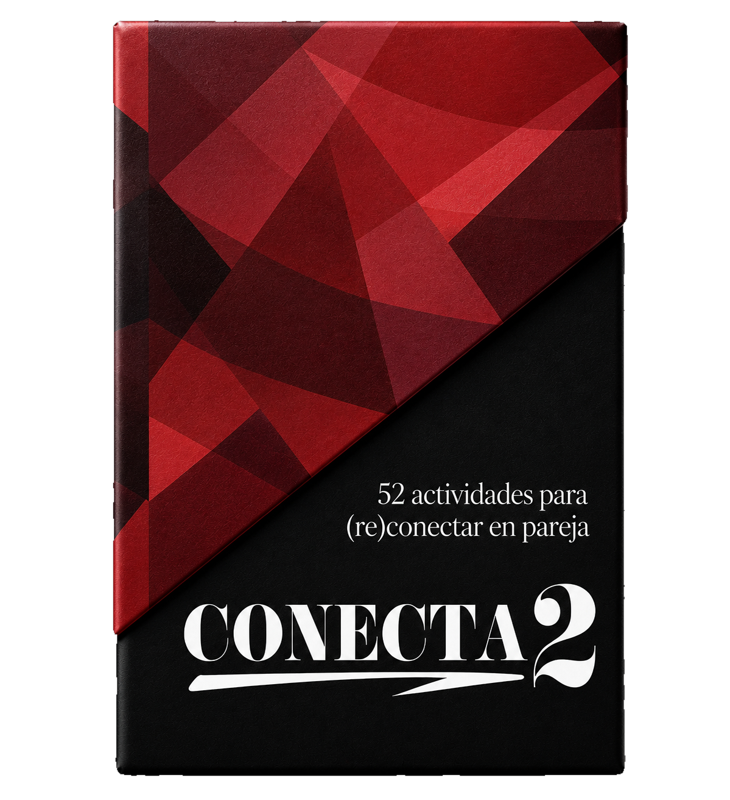

Conecta2 es una invitación a volver a mirarse, escucharse y elegirse con intención. No es solo un juego. Es una pausa. Una conversación pendiente. Una forma sencilla de volver a encontrarse.
Quiero reconectar
A veces no hace falta una gran crisis para sentirse lejos. A veces basta con la rutina, el cansancio, las conversaciones automáticas y los días que pasan sin preguntarnos de verdad: “¿Cómo estamos?”
Cada actividad está diseñada para abrir conversaciones, crear recuerdos y convertir pequeños momentos en rituales de conexión. Porque la conexión no se improvisa. Se cultiva.
52 actividades diseñadas para fortalecer la conexión emocional, salir de la rutina y volver a descubrirse incluso después de años juntos.
Preguntas y dinámicas para hablar de lo que normalmente queda pendiente.
Actividades simples para recuperar presencia, complicidad e intimidad emocional.
Un ritual semanal para priorizar la relación con intención y constancia.
Una carta por semana. Un momento para los dos. Un año entero para reconectar.
Comprar Conecta2